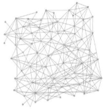

|
Xiaogang Dong Ph.D Email:dxg110@aliyun.com
Research Interests: |
 |
Journal papers: ("*":Corresponding author)
Xiaogang Dong, Zheng Wan*, Changshou Deng, Shenglu Zhao, Xiwei Dong. Bilevel Fairness Strategy Based Computation Efficiency Maximization for NOMA-Aided Edge Network[J]. Physical Communication. Accept（on Printing） (SCI 四区, JCR Q2).
Zheng Wan, Shenglu Zhao*, Cuifang Wang, Yifeng Tan, Xiaogang Dong. Joint DRL and GCN-based Cloud-Edge-End collaborative cache optimization for metaverse scenarios[J]. Computer Networks, vol 263:111239, 2025, DOI:https://doi.org/10.1016/J.COMNET.2025.111239. (CCF推荐B类期刊, SCI 三区, JCR Q1).
Zheng Wan, Xiaogang Dong* . Computation Power Maximization for Mobile Edge Computing Enabled Dense Network[J]. Computer Networks, vol 220:109458, 2023, DOI:https://doi.org/10.1016/j.comnet.2022.109458. (CCF推荐B类期刊, SCI 二区, JCR Q1, IF:5.493).
Hu Peng, Zhenzhen Xu, Jiayao Qian, Xiaogang Dong , Wei Li, Zhijian Wu. Evolutionary constrained optimization with hybrid constraint-handling technique[J]. Expert Systems with Applications, 2022:118660.
Zheng Wan, Xiaogang Dong*, Changshou Deng. Optimizing computation offloading under heterogeneous delay requirements for wireless powered mobile edge computing[J]. Wireless Networks, August, 2022, DOI: https://doi.org/10.1007/s11276-022-03075-w. (CCF推荐C类期刊, SCI, JCR Q2/Q3, IF: 2.701)
Xiaogang Dong, Zheng Wan, Changshou Deng, Wenying Wen, Yuxuan Luo. Intelligent Time Allocation for Wireless Power Transfer in Wireless-Powered Mobile Edge Computing[J]. Wireless Communications & Mobile Computing, vol. 2022, Article ID 6722848, 13 pages, 2022, DOI: https://doi.org/10.1155/2022/6722848, (CCF推荐C类期刊, SCI, JCR Q3, IF: 2.146) .
Changshou Deng, Xiaogang Dong*, Yucheng Tan, Hu Peng. Enhanced Differential Evolution Algorithm with Local Search Based on Hadamard Matrix[J]. Computational Intelligence and Neuroscience, vol. 2021. DOI: https://doi.org/10.1155/2021/8930980. (SCI, JCR Q2/Q3, IF: 3.120) [PDF]
Xiaogang Dong, Changshou Deng, Yucheng Tan. Dynamic Differential Evolution with Oppositional Orthogonal Crossover for Large Scale Optimization Problems[J]. International Journal of Computing Science and Mathematics, 2017, 8(5): 414-424.[PDF]
董小刚, 邓长寿, 袁斯昊, 吴志健, 张忠平. MapReduce模型下的分布式差分进化算法[J]. 小型微型计算机系统, 2016, 37(12): 2695-2701.[PDF]
董小刚, 邓长寿, 谭毓澄, 彭虎, 吴志健. 求解大规模优化问题的新型协同差分进化算法[J]. 计算机应用, 2017, 37(11): 3219-3225.[PDF]
董小刚, 邓长寿, 谭毓澄, 彭虎. 求解大规模优化问题的正交反向混合差分进化算法[J]. 计算机应用研究, 2016, 06: 1656-1661.[PDF]
董小刚, 邓长寿, 谢清, 柯林, 刘妍. 求解高维优化问题的正交动态差分进化算法[J]. 计算机工程, 2015, 07: 17-24.[PDF].
Conference papers: ("*":Corresponding author)
Zheng Wan, Yuxuan Lu, Xiaogang Dong*, Changshou Deng. Computation Offloading Based on Deep Reinforcement Learning for UAV-MEC Network[C]. 2023 International Conference on Algorithms and Architectures for Parallel Processing (ICA3PP 2023) workshop (IUAVNet) (ICA3PP 2022, CCF推荐会议) , Virtual, July 25-27.
Xiaogang Dong, Zheng Wan, Changshou Deng. Optimization of Wireless Power Transfer for Wireless-Powered Mobile Edge Computing[C]. 2022 International Conference on Computer Communications and Networks (ICCCN 2022, CCF推荐会议) , Virtual, July 25-27.
Zheng Wan, Xiaogang Dong*, Changshou Deng. Deep Learning with Enhanced Convergence and its Application in MEC Task Offloading[C]. 21st International Conference on Algorithms and Architectures for Parallel Processing (ICA3PP 2021, CCF推荐会议) , Xiamen, China, Dec 3-5.
Changshou Deng, Xiaogang Dong*, Yucheng Tan, Hu Peng. Variable Fragments Evolution in Differential Evolution[C]. Advances in Swarm Intelligence - 12th International Conference {ICSI} 2021, Qingdao, China, July 17-21.[PDF]
Dong X G, Deng C S, Zhang Y, et al. Enhancing local search of differential evolution algorithm for high dimensional optimization problem[C]. Control Conference. IEEE, 2015.(EI:20154601538719)
Dong X G, Liu Y, Deng C S. Improved Differential Evolution Algorithm and its Application in Complex Function Optimization[C] 中国控制与决策会议. 2014:3698-3701.(EI:20143218039674)